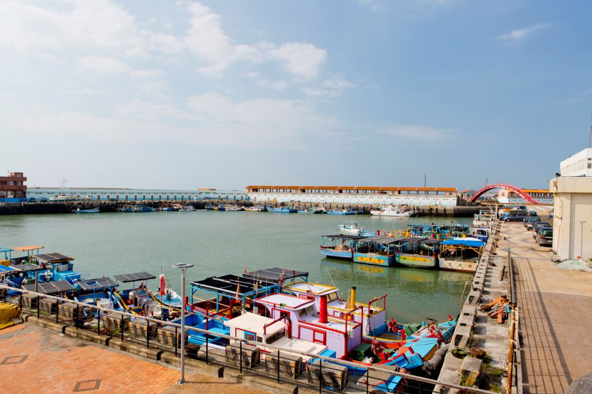
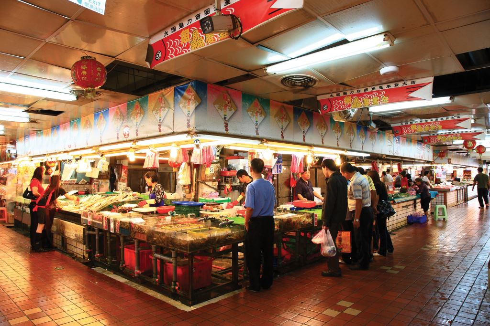
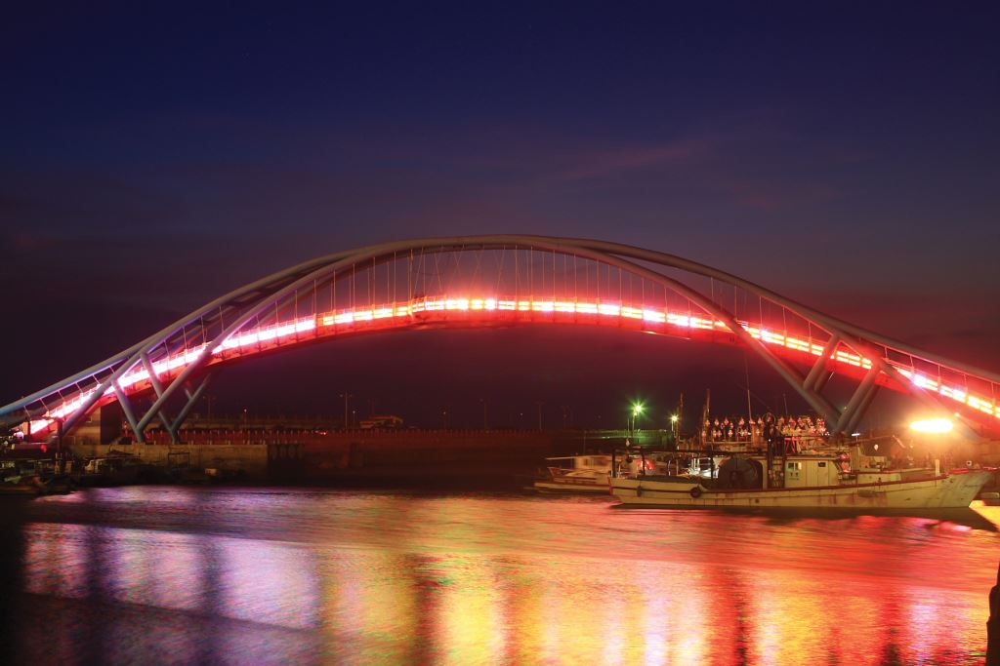
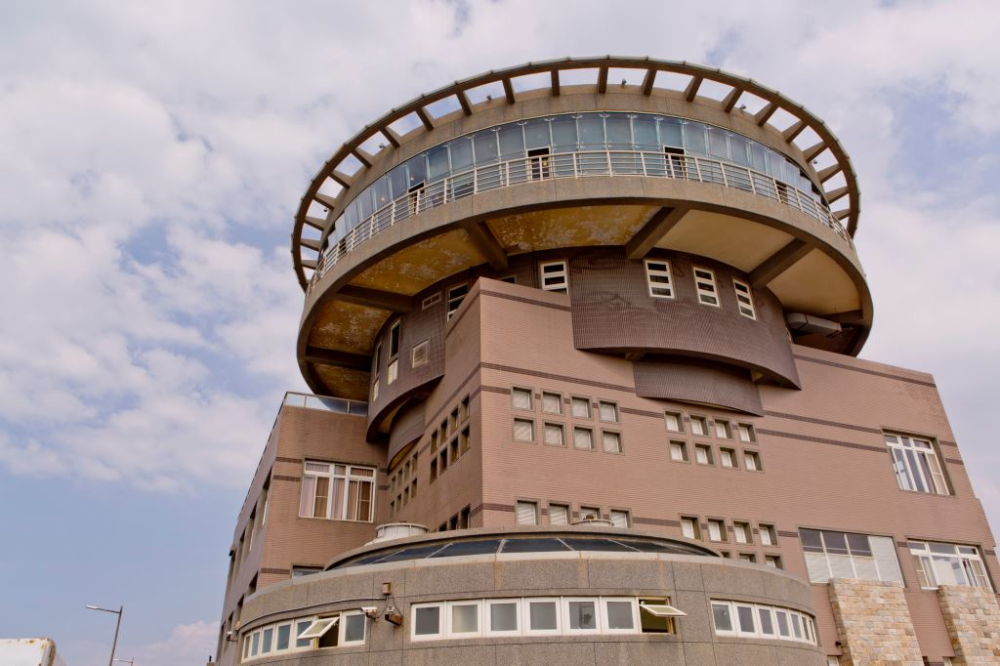

竹圍漁港是北桃園唯一的漁港，如今已成為深具休閒功能的觀光漁港，每逢假日更是人潮不斷。
竹圍漁港距離桃園國際機場僅三公里，常常可以看見桃園機場的班機由上方飛過。
竹圍漁港內的直銷中心不僅是北台灣三大漁貨供銷中心之一，如今更是深具休閒功能的觀光漁港。
到了竹圍漁港，一定要海鮮美食！由海港直送的海鮮餐廳多半集中在堤防南岸的海產街。另外一旁還有漁會設立的魚產品直銷中心，除了有新鮮漁獲販售，也有好口碑的熟食區，每家攤位的菜色與烹調水準相當高，而且價格實在，是喜愛品嚐海鮮的內行遊客經常報到之地。
竹圍漁港的北邊入口，則建有一座彩虹橋。彩虹橋採用紐爾遜鋼拱橋建造，是竹圍漁港的一大地標，入夜後更添浪漫氣息。
南邊竹圍漁港的漁會辦公大樓，建有360度景觀旋轉餐廳，緊鄰一片沙灘，讓竹圍漁港的假期不只是有得吃，還有更多豐富的活動有得玩。